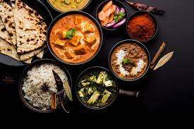

Kashmiri cuisine is the cuisine of the Kashmir Valley in the Indian subcontinent. Rice is the staple food of Kashmiris and has been so since ancient times. Vegetable curries and meat, along with rice, are the most popular food items in Kashmir. Vegetable curries and meat along with rice, some vegetables and salad are prepared on special occasions like Eid only. Kashmiris consume meat voraciously.Despite being Brahmin, most Kashmiri Hindus are meat eaters

The food of Punjab is meant for the strong-hearted. It is rich in flavours and has a liberal dose of ghee (clarified butter) and spices. Punjab has an abundance of milk and therefore milk products are an important part of daily diet. No meal is complete without large glassfuls of butter milk or lassi (yoghurt drink). The people of this region are largely wheat eaters and have developed variations of breads including the stuffed a/oo paralha (potato bread) and the makke ki roti (maize bread). Vegetarian delights such as sarson saag (mustard leaf curry), rajma-chawal (kidney beans with steamed rice) and kadhi (gram flour and yoghurt curry) are the most popular Punjabi dishes. Punjabis have also created a combination of the northwest frontier cuisine and Mughlai recipes to present rich poultry and mutton dishes. The ubiquitous "tandoori chicken" s a great favorite!
The cuisine of Uttar Pradesh is just as diverse as its geography. Ranging from simple every day fare to rich, elaborate banquets, the cuisine of Uttar Pradesh has absorbed and adapted a variety of cuisines to create an entire smorgasbord of wonderful dishes. The people of Uttar Pradesh love to cook, to eat and to feed! Difference in communities notwithstanding, as a people, they are very warm and hospitable. For most of them, the ultimate in hospitality means you feed your guests till they beg for mercy. Many Hindu communities are staunch vegetarians and they have created a vast variety of vegetarian dishes ranging from the all time favorite puri-aloo (potatoes and fried wheat bread) to savouries and divine desserts and sweetmeats.
India best known cuisine came from the Mughals and along with European cooking, influenced the royal kitchens However, the common man kitchen in Rajasthan remained unaffected and the simplest ingredients go into preparing most dishes.The food owes much to the demands and ingenuity of the lifestyle of the people.

In the desert areas of Jaisalmer, Bikaner and Barmer the scarcity of water and fresh green vegetables had- its impact on the creativity of the cooks. Instead of water, the womenfolk of the herdsmen used milk, buttermilk and clarified butter that was available in plenty, as well as dried lentils and beans from native plants. Gram flour is a major ingredient and is used for preparing delicacies like gatta ki sabzi, pakodi and khata. Bajra and corn, the staple grains, go to making rotis, rabdi and kheechdi. And various chutneys prepared from locally available spices like coriander, garlic, mint and turmeric round off the regional flavor.

Almost always strictly vegetarian, Gujarati cuisine is unlike any other Indian cuisine. The difference lies in the unusual blending of the sweet with the savoury into a harmonious whole. Even though the state of Gujarat has absorbed many outside influences down the ages, the cuisine has remained much the same. The grand spread of Gujarati cuisine can be glimpsed and savoured in the very popular "Gujarati Thali" a large silver platter consisting of innumerable bowls full of vegetable curries, dais or lentil based gravies, a variety of breads, savories - crispy fried farsans. Sweetmeats and an amazing range of sweet and sour chutneys and pickles. The entire meal including the vegetables and dais (curried lentils) achieves a delicate balance of flavours - sweet and sour, salty and spicy, crisp and soft, low fat and deep-fried!
Bengali food consists of a lot of fish, lentils and rice. Breakfast could be milk and rice flakes eaten with gur (jaggery) or luchi (fluffy wheat pancake) with aloo dum (a dry spicy potato dish not to be mistaken for the Kashmiri dum a/oo). Lunch and dinner are elaborate affairs. The first course is rice and daal (lentil curry) with vegetables, pickled mangoes and fresh salad. It is followed by rice and meat and yet another course of rice and-fish: Great fish eaters, the true blue Bengali is the one who can crunch fish bones without letting them stick in the throat! The "hilsa" fish is a specialty when cooked in mustard sauce

Andhra food is deliciously hot and tangy. The everyday favorite is pulihara. tamarind rice spiced up with sliced green chilies. Telugu people love their side dishes, pickles that ill have you red in the face, crisp poppadums and yoghurt. The dosa, a rice pancake is special in Andhra. Called the pessaratu, it is filled with a savoury semolina preparation called uppama.read more... Famous all over the world, the aromatic meat and rice preparation called biryani belongs to Hyderabad. Taking its cue from the Nizams of Hyderabad, this distinctly Muslim food is mainly concerned with succulent meats, sweet spices and ways of putting them together in the most delectable fashion there could be. Fruits, like custard apples, bananas, mangoes and the locally grown grape, anab e shahi, act like an antidote to the spices of the food.

The food of Tamil Nadu is what passes for "south Indian cuisine" everywhere else in the country. Idli, dosa, vada, sambar. uppama As with all Indian food, a meal centres on a base of rice or semolina preparation. Eaten alongside is the sambar, sour hot dal souped-up with vegetables. The Brahmins are vegetarian, but others consume sour-hot fish, mutton and chicken with gusto. read more... Of the Tamilian cuisines it is Chettinad food that is on the ascendance on the popularity charts. The cuisine belongs to the money-lending community of Chettiars who were originally from the deep south of the state but whose trade links took them far and wide into South East Asia.
Rice is the staple of the Kerala diet Various preparations form the base of the meal; curries of fish, meat and vegetable accompany it Most dishes bear the flavor of coconut, curry leaves and mustard seeds, and the tastes of coconut milk and tamarind. All communities except the Namboodiris. a community of orthodox Brahmins, consume meat. Kerala cuisine is distinguished by its regional and religious variations The food of the Malabar Coast is distinct in its use of red chillies, pepper, mutton and beef preparations and the fondness for the famed Malabari "barolha" a many-layered fried bread made from unleavened dough.